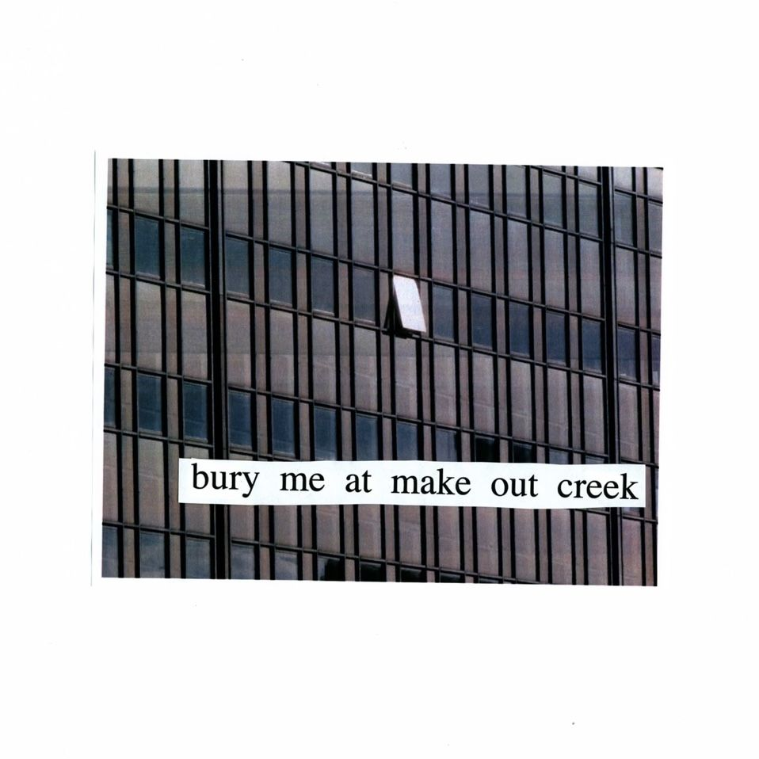

Bury Me At Makeout Creek (2014)Bury Me at Makeout Creek adalah album studio ketiga dari musisi indie rock Amerika Serikat, Mitski, yang dirilis pada 11 November 2014 melalui label Double Double Whammy. Album ini ditulis dan diproduseri oleh Mitski sendiri, dengan bantuan produser Patrick Hyland. Album ini menandai perubahan penting dalam arah musikal Mitski, dengan suara yang lebih mentah, distorsi gitar yang kuat, dan nuansa emosional yang intens dibandingkan rilisan sebelumnya. Meskipun dirilis secara independen, Bury Me at Makeout Creek mendapat sambutan luas dari kritikus dan perlahan menjadi karya terobosan Mitski, memperluas basis pendengarnya di kancah musik alternatif internasional. Album ini sering dipuji karena liriknya yang jujur, eksplorasi tema kesepian, identitas diri, cinta, dan keterasingan emosional. Beberapa lagu yang paling dikenal dari album ini antara lain "Townie", "First Love / Late Spring", "I Will", dan "Last Words of a Shooting Star". Berkat pengaruhnya yang kuat, album ini kini dianggap sebagai salah satu karya paling penting dalam diskografi Mitski dan menjadi fondasi bagi kesuksesan album-album berikutnya. |